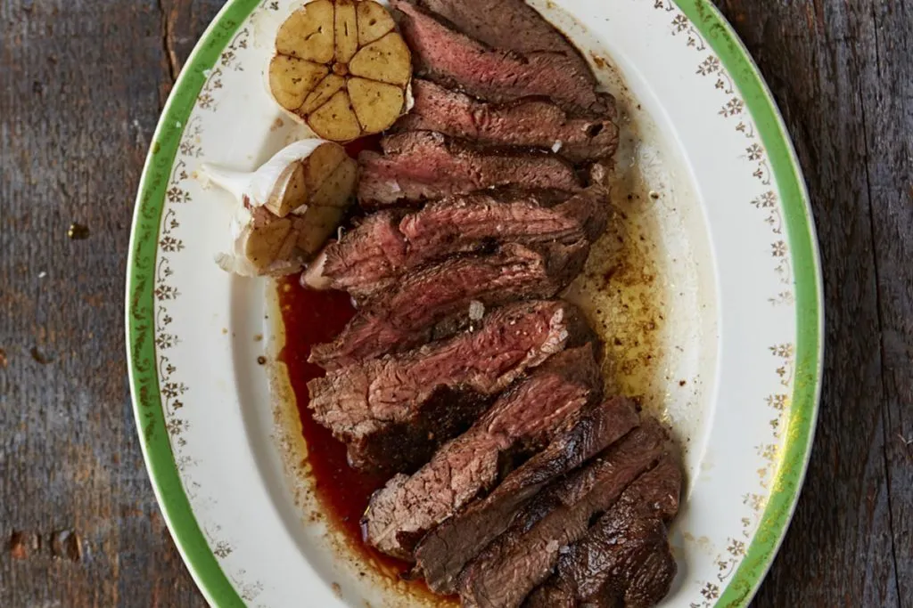

Medium-Rare Steak

Description
Here's how to cook medium-rare steak at the perfect level of doneness every time. We'll cover how long to cook a steak to medium rare and more here.
Ingredients
- 1 cup extra virgin olive oil
- 300grams sirloin steak
- salt
- blackpepper
- butter
- half of garlic clove
Steps
- Rub the steak all over with a good lug of olive oil and a good pinch of sea salt and black pepper
- Add the steak to a hot pan, then cook for 6 minutes for medium-rare, or to your liking, turning every minute
- Halve a garlic clove and rub it over the steak every time you turn it
- Rub the steak with a knob of butter, the sweetness from the butter will make it taste divine!